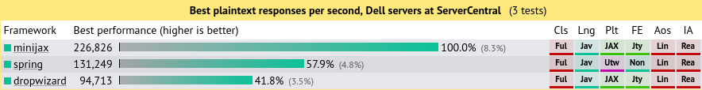
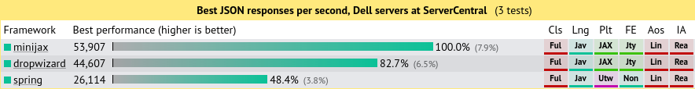
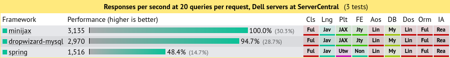

Minijax
Fast, simple, lightweight Java EE
Minijax is a Java library for quickly creating production-ready Java EE web applications.
Minijax is like Spring Boot and Dropwizard, but faster, lighter, and easier.
Features
- Create stand-alone Java applications (no Application Servers, no WAR files)
- Embedded Undertow for fast HTTP
- Integrated JAX-RS for HTTP routing (no Jersey)
- Integrated CDI for dependency injection (no Spring or Guice)
Quick Start
pom.xml
<dependency>
<groupId>org.minijax</groupId>
<artifactId>minijax-core</artifactId>
<version>0.2.0</version>
</dependency>Hello.java
import javax.ws.rs.*;
@Path("/")
public class Hello {
@GET
public static String hello() {
return "Hello world!";
}
public static void main(String[] args) {
new org.minijax.Minijax()
.register(Hello.class)
.start();
}
}Extensions
Minijax extensions are optional libraries for additional functionality.
- minijax-json - Jackson for JSON serialization including JAXB, Afterburner
- minijax-websocket - Undertow for JSR 356 compliant websockets
- minijax-mustache - Mustache for HTML templating
- minijax-db - Eclipselink for JPA, ORM, connection pooling, cluster coordination
- minijax-liquibase - Liquibase for database migrations
- minijax-swagger - Swagger for automatic API documentation
- minijax-security - Library for user account management, login, logout
- minijax-cloudwatch - SLF4J logger for AWS CloudWatch

Performance
Numbers from the most recent Techempower Benchmarks
Plain Text

JSON Serialization

Database Queries

External Links
- Github - Source and issue tracking
- Travis CI - Build server
- Sonar - Static analysis
- Javadocs - API documentation
- Maven Site - Library documentation
- Maven Central - Maven artifacts